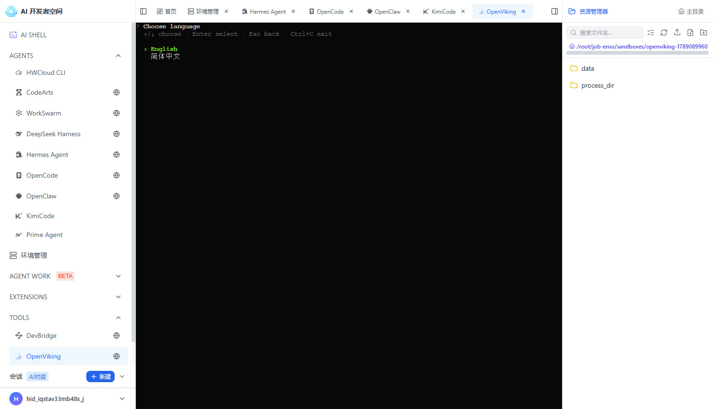
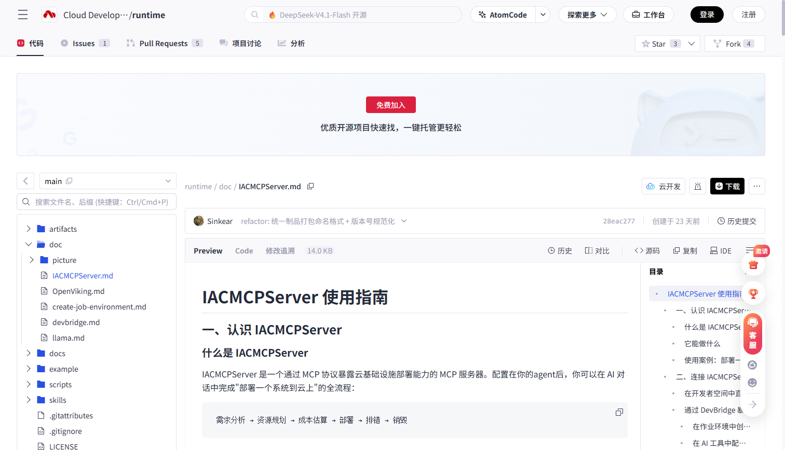

KasmVNC Desktop 从部署到一句话装应用
在 AI 开发者空间（AI DevSpace）的「环境管理」里点一次部署，就能在浏览器标签页里得到一台 Ubuntu 桌面；再对 AI Shell 说一句「帮我装 Chrome 和飞书」，应用、启动脚本、桌面图标全部就位；最后再用平台的一键直达链接，直接进入你自己的开发环境。
AI 开发者空间是面向开发者的智能开发工作空间，以 AI SHELL 为核心入口，通过自然语言交互和命令行两种模式，打通云资源操作、智能代码生成、多 Agent 协作、基础设施即代码（IaC）部署、消息渠道对接、隧道托管与远程连接等全链路开发能力，帮助开发者在统一工作台中高效完成云原生应用的开发、部署与运维。
进入工作台后，左侧为全局导航（AGENTS、TOOLS、环境管理、EXTENSIONS、RESOURCES、文件管理、设置与反馈）与左下角的「会话」区，右侧为资源管理器面板，主区域展示当前功能页。
| 模块 | 说明 |
|---|---|
| AI SHELL | 核心入口，支持 AI 对话、TUI、命令行三种交互模式；下含华为云 Skills 与 Channels 两个子模块 |
| AGENTS | 14 个智能体（含待开放的 SRE），覆盖代码编写与分析、多 Agent 协作、DeepSeek 推理、编程辅助、个人助手、AI 教学等场景 |
| 环境管理 | 30 个作业环境，支持智能体、开发工具、数据库、基础设施、学习五类分类与状态筛选，一键部署与管理 |
| EXTENSIONS | 扩展能力，当前提供连接器（外部服务的 MCP 接入与凭证管理） |
| TOOLS | 开发辅助工具集：链接生成（直达链接）、DevBridge 隧道管理、KasmVNC 远程桌面、Next AI Draw.io 绘图、Security Scan Suite 安全扫描、AgentEval Lite 评测、Grape AI DevOps、OpenViking 上下文数据库、GaussDB、AI Book |
| RESOURCES | 资源入口：文档站（本操作指南）与 Agent 接入（IACMCPServer 使用指南） |
| 文件管理 | 工作区文件操作：搜索、批量处理、上传、新建文件/文件夹，右侧面板快速访问 |
| 设置与反馈 | 账号信息与主题设置（浅色 / 深色 / 跟随设备），以及问题反馈入口 |
| 视频指导 | 核心功能与实操方法的视频教程，支持按 CodeArts、WorkSwarm、作业环境、GaussDB、DevBridge、OpenViking、模型接入分类筛选查看 |
| 实践案例 | 典型场景的端到端实践教程（KasmVNC 桌面、码道 WebUI、DevBridge TUI、EduSwarm 课堂、作品展览馆等），案例链接可一键直达对应环境 |
| 更新日志 | 按月记录各版本的新特性、特性更新与问题修复，并标注兼容性影响，便于评估升级 |
在华为云上进行开发与运维时，开发者常遇到以下挑战：
通过华为云账号登录 AI 开发者空间-体验中心 后默认进入首页；在其他页面时，点击顶部标签栏的 首页 即可返回。首页聚合新手引导、每日资讯与实践入口，主区域从上到下依次为快速开始、每日AI知识精选、实践中心、开发者动态四个板块。
首次使用建议按以下顺序上手：

| 板块 | 说明 |
|---|---|
| 快速开始 | 产品与核心功能的视频教程列表（什么是 AI 开发者空间、码道 CodeArts、WorkSwarm 等），点击卡片即可在线播放 |
| 每日AI知识精选 | 每日更新的大模型与 AI 领域精选资讯，涵盖前沿模型发布、技术进展与实践案例 |
| 实践中心 | AI 云原生、鸿蒙、AI Agent、IaC 四大开发实践中心，按场景提供端到端的开发实践资源，点击对应中心进入实践页 |
| 开发者动态 | 华为云开发者活动、任务福利与平台最新动态 |
AI SHELL 是产品的核心入口，秉持“智驱华为云，对话即部署”的产品理念，大模型驱动，支持自然语言对话、智能排错与云端在线终端，提供三种交互模式：
| 模式 | 用途 | 说明 |
|---|---|---|
| AI 对话 | 自然语言交互 | 用自然语言描述需求，AI 生成命令并执行（默认模式） |
| TUI | 终端交互 | 终端界面（Terminal UI），面向习惯终端操作的开发者 |
| 命令行 | 命令式操作 | 面向熟悉 CLI 的开发者，直接输入命令 |
操作步骤：
/root/workspace/mode 可随时切换「AI 对话」「TUI」「命令行」模式
输入增强：
/ 触发快捷指令：/clear、/compact、/cwd、/help、/mode、/model、/new、/rename、/sessions、/settings$ 快速引用技能点击输入框左下方的 mode: Semi-Auto 按钮，可打开会话配置：
| 配置项 | 说明 | 可选值 |
|---|---|---|
| Session Mode | 控制 AI 的自主性与安全边界 | Auto / Semi-Auto（默认）/ Manual / Plan |
| Reasoning Level | 控制模型产生的推理量 | Low / Medium（默认）/ High |
| Model | 选择使用的 LLM 模型 | hwdevspace/deepseek-v4.1-flash-1017（默认）/ hwdevspace/deepseek-v4-pro-0813 / hwdevspace/glm-5.1 / hwdevspace/glm-5.2 |

AGENTS 分组位于左侧导航顶部，根据已部署的环境状态动态展示智能体入口，未部署或待开放的环境不会出现在导航中。 当前共 14 个智能体，其中 SRE 待开放，覆盖代码生成、多 Agent 协作、个人助手、模型推理、AI 教学等场景：
进入与使用：
| 智能体 | 入口形态 | 说明 |
|---|---|---|
| AI Shell | TUI | 智驱华为云，对话即部署 |
| 鸿蒙实践中心 | WebUI | 鸿蒙 / ArkTS 云端编译打包与模拟器调测（在环境管理中归类为开发工具） |
| CodeArts | TUI / WebUI | 华为云码道代码智能体 CLI，覆盖代码编写、分析、优化 |
| WorkSwarm | TUI / WebUI | 多 Agent 协作框架，自动分解任务并分配 |
| DeepSeek Harness | TUI / WebUI | DeepSeek 官方多代理智能体开发平台 |
| Hermes Agent | TUI / WebUI | 自我改进型 AI Agent，内置学习循环与长期记忆 |
| OpenCode | TUI / WebUI | 开源 AI 编程代理，可连接 Claude、GPT、Gemini 等模型 |
| OpenClaw | TUI / WebUI | 开源可编程 AI 个人助手平台，支持自动化任务与工具调用 |
| KimiCode | TUI | 智能编程服务，支持代码阅读、文件编辑、命令执行、网页搜索 |
| Prime Agent | TUI | 开源通用 AI 编码智能体，内置 IPython 内核，支持 ACP 接入 |
| EduSwarm | WebUI | AI 教师团队协作平台，覆盖备课、上课、作业、批改、学情 |
| MiniMax Code | TUI | MiniMax Code CLI，可接入 Shell 与 CI |
| iCode | TUI | 纯本地 AI 开发平台，主打轻量 TUI 体验 |
| SRE | — | 云服务运维智能体，支持环境运维、故障排查、扩缩容规划、费用查询（待开放） |
鸿蒙实践中心 基于 GLM 模型鸿蒙增训、深度适配 ArkTS 语言，提供云端编译打包与云端 + 本地模拟器调测能力，通过 WebUI 使用（在环境管理中归类为开发工具）。工作台左侧分为项目管理（CodeArts Web、CodeArts CLI、Skills 管理）与设备管理（鸿蒙云模拟器、本地真机&模拟器），并内置最佳实践。
操作步骤：

CodeArts 是华为云码道代码智能体 CLI，支持代码编写、分析与优化。支持 TUI（终端模式） 和 WebUI（网页模式） 两种使用方式。
操作步骤：


WorkSwarm 是多 Agent 协作框架，可自动将复杂任务分解并分配给不同 Agent 协作完成。支持 TUI（终端模式） 和 WebUI（网页模式） 两种使用方式。
操作步骤：


DeepSeek Harness 是基于 DeepSeek 大模型的 AI 推理智能体，支持高效模型推理、代码生成与自然语言理解，可无缝集成到开发工作流中。支持 TUI（终端模式） 和 WebUI（网页模式） 两种使用方式。
操作步骤：


Hermes Agent 是自我改进型 AI Agent，内置学习循环与长期记忆，可持续优化自身行为。支持 TUI（终端模式） 和 WebUI（网页模式） 两种使用方式，WebUI 提供 Chat、Sessions、Files、Models、Logs、Cron、Skills、Plugins、MCP、Channels、Webhooks、Config 等管理模块。
操作步骤：


OpenCode 是开源 AI 编程代理，可连接任意模型完成编程任务。
操作步骤：

OpenClaw 是开源可编程 AI 个人助手平台，支持多渠道消息接入与自动化任务处理，可处理各类个人任务。支持 TUI（终端模式） 和 WebUI（网页模式） 两种使用方式。
操作步骤：


KimiCode 是智能编程服务，支持代码阅读、编辑与命令执行。
操作步骤：

Prime Agent 是开源通用 AI 编码智能体，内置 IPython 内核与 TUI / ACP 双界面，可在终端中交互式完成编码任务，支持用 @ 引用文件作为上下文。
操作步骤：

EduSwarm 是 AI 教师团队协作平台（AI 智慧课堂工作台），提供备课、上课、作业、批改、学情全流程 AI 辅助。内置今日课堂、课堂管理、班级管理、课件中心、作业中心、批改报告、教学总览、Agent 配置与统计、Edu SkillHub、Studio、学生端等功能模块，支持任务编排与定时任务。
操作步骤：

MiniMax Code 是 MiniMax 提供的代码智能体 CLI（MCode），支持交互式 TUI，也可通过 mcode exec 接入 Shell 脚本与 CI 流程。
操作步骤：
/login 完成登录mcode exec 调用
iCode 是纯本地的 AI 开发平台，主打轻量 TUI 体验，数据与工作流完全由用户掌控。内置 Chat / Agent / Tools 等模式与常用工具集，适合在终端内完成代码生成、文件编辑与命令执行。
操作步骤：

TOOLS 汇总平台提供的开发辅助工具，覆盖环境直达链接、隧道管理、远程桌面、AI 绘图、安全扫描、Agent 评测、AI DevOps、上下文数据库、数据库学习与在线阅读等场景。工具统一以作业环境形式在「环境管理」中部署，启动后通过对应环境的 TUI / WebUI / Dashboard 入口使用。
使用方式：
| 工具 | 入口形态 | 用途 |
|---|---|---|
| 链接生成（BETA） | 平台能力 | 为作业环境生成可分享的直达链接，打开即进入对应环境 |
| DevBridge | TUI / WebUI | 隧道管理，支持本地服务托管与远程端口连接 |
| KasmVNC Desktop | WebUI | 浏览器内的 Linux 远程桌面（Ubuntu） |
| Next AI Draw.io | WebUI | 自然语言生成 Draw.io 图表，并提供 MCP 绘图能力 |
| Security Scan Suite | TUI | CVE、密钥泄露、SBOM、IaC 误配置、端口暴露与主机基线扫描 |
| AgentEval Lite | WebUI | Agent 数据集评测、运行对比与 Skill 生成优化 |
| Grape | WebUI | AI Native DevOps，将 Git 项目转为 AI 自主开发工作流 |
| OpenViking | TUI / WebUI | AI 智能体的开源上下文数据库，辅助代码理解与重构 |
| GaussDB | TUI | GaussDB 混合云开发者版，兼容 Oracle，供学习与适配验证 |
| AI Book | Dashboard | AI Agent、AI Infra、生成式 AI 三门课在线阅读 |
OpenViking 是智能开发辅助工具，帮助开发者理解代码、提供重构建议与自动化开发支持。支持 TUI（终端模式） 和 WebUI（网页模式） 两种使用方式。
操作步骤：



DevBridge 是隧道管理工具，提供开发者隧道能力，支持托管（Host）将本地端口服务暴露到公网隧道，以及连接（Connect）将远端隧道端口转发到本地。支持 TUI（终端模式） 和 WebUI（网页模式） 两种使用方式。在环境管理中部署 DevBridge 环境后，通过该环境卡片上的 TUI / WebUI 入口使用。
操作步骤：
进入 TUI 后终端提示符为 root@devbridge:~/devbridge，所有操作通过 devbridge 命令完成，适合需要精细控制参数或脚本化执行的场景。

devbridge --help 查看命令总览，提示符为 root@devbridge:~/devbridge常用命令：
| 命令 | 用途 |
|---|---|
devbridge create <name> -d <描述> -e <小时> | 创建隧道并返回隧道 ID |
devbridge list / devbridge show <tunnelId> | 列出全部隧道 / 查看单个隧道详情 |
devbridge update <tunnelId> -n <名称> -d <描述> -e <小时> | 修改隧道名称、描述与有效期 |
devbridge port create <tunnelId> -p <端口> --protocol auto | 为隧道添加端口（-a 允许匿名访问） |
devbridge port list <tunnelId> / port show <tunnelId> -p <端口> | 列出 / 查看隧道端口 |
devbridge port update <tunnelId> -p <端口> -a / port delete | 修改端口访问策略（-a 允许匿名）/ 删除端口 |
devbridge host <tunnelId> | 托管隧道中已配置的端口，输出公网地址 |
devbridge connect <tunnelId> | 连接远端隧道，映射到本机 localhost 端口 |
devbridge set <tunnelId> / devbridge unset | 设置 / 取消本机默认隧道，后续 host、connect 可省略 ID |
devbridge token <tunnelId> -s host|connect | 签发托管端或连接端的访问令牌 |
devbridge delete <tunnelId> / devbridge delete-all | 删除单个隧道 / 删除全部隧道 |
devbridge echo / devbridge ping / devbridge version | 启动诊断回显服务 / 测试连通性 / 查看 CLI 版本 |
devbridge host 才会生效。WebUI 是 DevBridge 的可视化控制台，隧道、托管进程与连接进程在同一个页面管理，适合日常分享服务、查看运行状态。
https://<tunnelId>-<端口>.<集群域名>），可直接复制地址分享localhost:<端口> 访问远端服务；关闭开关即停止进程
控制台区域说明：
| 区域 | 说明 |
|---|---|
| 隧道列表 | 创建、搜索、查看隧道；托管 / 连接开关控制本机进程；操作列支持详情、复制与删除 |
| 托管列表 | 展示运行中的 Host 进程，包含端口、公网地址、启动时间、已运行时长与匿名 / 鉴权访问策略，可复制地址或停止进程 |
| 连接列表 | 展示运行中的 Connect 进程；为空时提示「暂无运行中的连接进程」，在隧道列表打开连接开关后出现 |
链接生成 用于把 AI 开发者空间中的指定位置（AI Shell 会话、某个作业环境、自定义启动流程）转换为一条可分享的推广链接（URL to ENV）。接收方打开链接即可直达对应入口，无需再逐级查找；链接支持渠道追踪与二维码下载，适合在文档、工单与教学场景中分发环境。
页面提供两种生成方式，可随时切换：

适合把一段任务提示词做成分享链接。对方打开链接会直接进入 AI Shell，提示词已预置在输入框中且默认不自动发送，确认后自行执行，常用于分发实践任务、排查步骤或教学示例。
| 字段 | 说明 |
|---|---|
| 基础地址 | 默认已带 ?target=/aishell，一般无需修改 |
| 渠道（运维） | 可选，用于标记链接的分发渠道 |
| AI Shell 提示词（prompt） | 要预置的提示词，上限 800 字 |

适合把已部署的作业环境（如「鸿蒙实践中心 · WebUI」）连同指定入口打包成直达链接，接收方打开即可进入该环境的命令行（TUI）或网页界面（WebUI）。
| 字段 | 说明 |
|---|---|
| 作业环境* | 下拉选择目标环境，选中后可切换需要直达的入口（TUI / WebUI） |
| 环境名（name） | 链接在会话与历史记录中的显示名称，上限 30 字，默认按「打开 + 环境 + 入口」自动生成 |

生成后可分别用 立即体验 自测、复制链接 分发、二维码 下载后线下扫码；生成记录会出现在顶部「历史链接」中。
适合没有现成环境、需要「先执行几条命令再启动服务」的场景：把准备命令与启动命令一起写进链接，接收方打开后按顺序执行，并直接进入服务页面。
| 字段 | 说明 |
|---|---|
| 环境名（name） | 存在执行命令时必填，上限 30 字 |
| 执行步骤（steps） | 按顺序串行的命令列表，点「新增命令」添加；每条可设置 说明（label）、命令（command）、工作目录（cwd）、超时（timeout）、跳过条件（skipIf）、失败也继续（ignoreFailure） |
| 启动与端口（launch） | 点「新增启动项」添加；需填 端口（port，建议 26000–26999）、启动命令（command）、工作目录（cwd），也可「+ 添加 AI Shell 预置」 |

切到「AI 生成」页签后，用一句话描述目标即可，例如「生成一条打开鸿蒙实践中心 WebUI 的直达链接」。输入框内 Enter 发送、Shift + Enter 换行，输入为空时回车会使用当前的默认提示词；生成过程与结果在 AI Shell 对话中展示，可继续追问调整。

KasmVNC Desktop 基于开源 VNC 服务器 KasmVNC，提供浏览器内的 Linux 远程桌面。环境部署后在浏览器标签页即可获得一台 Ubuntu 桌面，可直接打开终端、文件管理器，并通过 get-apps.sh 一键安装常用应用（如 feishu、vscode、chrome、QQ、wechat 等）。
操作步骤：
get-apps.sh 安装所需应用/root 目录，环境重启或升级不会丢失
Next AI Draw.io 基于自然语言描述自动生成 Draw.io 图表，支持流程图、ER 图、类图、时序图等多种类型，也可基于截图或 PDF 转换为可编辑图表。同时通过集成 MCP 服务，AI Shell 与其他 Agent 可以发现并调用其绘图能力。
操作步骤：
.drawio 或图片格式
Security Scan Suite 通过 MCP 协议暴露安全扫描能力，覆盖制品 CVE 漏洞、密钥泄露、SBOM、IaC 误配置、端口暴露与 Lynis 主机基线，供 AI Agent 调用，也可在 TUI 内直接执行扫描脚本完成检查。
操作步骤：
scan-t.sh -h 查看可用扫描阶段与参数~/.secaudit/reports/ 目录
AgentEval Lite 是 Agent 测评平台：连接外部 Agent，准备测试场景（评测数据集），并可生成与管理 Skill，通过运行对比评估不同组合的实际表现，输出评分、回答与改进建议。包含 Agent 配置、评测数据集、运行对比、Skill 训练优化四个模块。
操作步骤：

Grape 是一个多 Agent 协作的 DevOps 平台，通过 VOD / Issue / Coding / QA / SRE 五类 Agent 覆盖从需求分析到部署运维的全生命周期。平台对接 GitCode 代码托管，通过 Webhook 自动触发流水线，由 AI Agent 自主完成任务并提交 PR。
操作步骤：


绑定仓库后，左侧导航按功能域组织，常用入口如下：
| 分组 | 入口 | 用途 |
|---|---|---|
| 工作区 | 需求中心 | 查看与管理需求 / Issue，跟踪拆解与流转 |
| 工作区 | 项目场景 | 为项目配置适用的业务场景 |
| 工作区 | 流水线 | 按 Issue 查看多 Agent 全链路执行进度 |
| 工作区 | 自动化 | 配置 Webhook 等自动触发规则 |
| DevOps Agents | VOD / Issue / Coding / QA / SRE Agent | 分别负责需求分析、任务拆解、编码提 PR、代码审查、部署运维 |
| 场景中心 | 场景·技能 / 插件市场 | 管理技能（Skill）与扩展插件，增强 Agent 能力 |
| 知识库 | 项目知识库 | 沉淀项目上下文，供 Agent 检索使用 |
| 可观测性 | 运行驾驶舱 | 查看 Worker 负载、探活延迟等系统监控指标 |
| 设置 | 仓库设置 | 配置当前仓库的流水线与 Agent 行为 |
| 用户设置 | Chat Agent / IM 渠道 / 设备中心 | 管理对话入口、IM 通知渠道与已登录设备 |
也可在 VOD Agent 页面直接输入需求手动触发，由 VOD 按需路由到下游 Agent。
grape）命令、执行环境变量、流水线机制、技能管理、运行时与引擎、系统监控、项目知识库等完整章节，遇到细节问题可优先查阅。打开 Grape 帮助中心 ↗
GaussDB 为混合云开发者版（ARM / HCE 2.0），单机集中式部署，兼容 Oracle 语法，适合学习、适配验证或测试使用，请勿用于生产环境。
环境已预置 gsql 客户端并完成数据库连接配置，进入终端即可直接执行 SQL，无需自行搭建实例。
操作步骤：
gsql 终端执行 SQL，完成建库建表、增删改查与聚合查询练习
进入 TUI 后会自动打开 GaussDB 标签页，左侧为 AI Shell 导航、右侧为资源管理器，终端默认已连接数据库，可直接执行 gsql 命令：
-- 查看版本与连接信息
select version();
\conninfo
-- 建库、建表并写入数据
create database shop;
\c shop
create table orders (
id bigint primary key,
customer varchar(64) not null,
amount decimal(10,2) not null,
status varchar(16) default 'NEW',
created_at timestamp default now()
);
insert into orders(id, customer, amount, status) values
(1,'Alice',199.00,'PAID'),
(2,'Bob',59.90,'NEW'),
(3,'Carol',899.00,'PAID');
-- 查询与聚合统计
select * from orders;
select status, count(*) as cnt, sum(amount) as total from orders group by status;
select version(); 与 \conninfo，确认 GaussDB Kernel 版本与连接信息

drop table、drop database 清理测试数据AI Book 提供学习资料在线阅读，内置《深入理解 AI Agent》《深入理解 AI Infra》《面向初学者的生成式 AI》三门课程，支持章节导航、全文搜索与划词笔记。
操作步骤：

环境管理用于浏览、部署和管理各类作业环境，支持搜索、分类筛选与状态筛选：
| 分类 | 说明 |
|---|---|
| 智能体（14） | 代码智能体、多 Agent 协作、个人助手、AI 教学辅助等 14 个智能体环境 |
| 开发工具（12） | 鸿蒙实践中心、DevBridge、IAC MCP Server、Agent Browser、HuaweiCloud DevKit、KasmVNC Desktop、Next AI Draw.io、Security Scan Suite、AgentEval Lite、Grape、SAG-Wiki Web、随身工具箱 |
| 数据库（2） | OpenViking AI 智能体开源上下文数据库、GaussDB 混合云开发者版 |
| 基础设施（1） | Llama 本地 Embedding 环境 |
| 学习（1） | AI Book 在线学习资料 |
共 30 个环境，其中运行中 28 个、未部署 1 个、待开放 1 个，支持的作业环境：
| 环境 | 类型 | 版本 | 说明 |
|---|---|---|---|
| AI Shell | 智能体 | 内置 | AI Shell · 智驱华为云，对话即部署（TUI） |
| CodeArts | 智能体 | v1.0.19 | 华为云码道 CodeArts Agent CLI，具备代码编写、代码分析、代码优化全链路能力（TUI / WebUI） |
| WorkSwarm | 智能体 | v1.0.17 | 多 Agent 协作框架，自动分解问题并分配给不同 Agent（TUI / WebUI） |
| HWCloud CLI | 智能体 | v1.0.8 | 基础设施即代码智能体，支持 Terraform、Ansible 等自动化工具 |
| DeepSeek Harness | 智能体 | v1.0.23 | DeepSeek 官方多代理智能体开发平台，内置 Web 图形界面与 Claude Code 风格 TUI（TUI / WebUI） |
| Hermes Agent | 智能体 | v1.0.10 | Nous Research 自我改进型 AI Agent，内置学习循环与长期记忆（TUI / WebUI） |
| OpenCode | 智能体 | v1.0.11 | 开源 AI 编程代理，内置免费模型，也可连接 Claude、GPT、Gemini 等任意模型（TUI / WebUI） |
| OpenClaw | 智能体 | v1.0.11 | 开源可编程 AI 个人助手平台，支持自动化任务与工具调用（TUI / WebUI） |
| KimiCode | 智能体 | v1.0.9 | 面向开发者的智能编程服务，支持代码阅读、文件编辑、命令执行、网页搜索（TUI） |
| Prime Agent | 智能体 | v1.0.8 | 开源通用 AI 编码智能体，内置 IPython 内核与 TUI / ACP 双界面（TUI，支持 ACP 接入） |
| EduSwarm | 智能体 | v1.0.7 | 基于多智能体框架的 AI 教师团队协作平台，覆盖备课、上课、作业、批改、学情全流程（WebUI） |
| MiniMax Code | 智能体 | v1.0.5 | MiniMax Code CLI，支持交互式 TUI 与 mcode exec 接入 Shell 和 CI（TUI） |
| iCode | 智能体 | v1.0.3 | 纯本地的 AI 开发平台，主打轻量 TUI 体验，数据与工作流由用户掌控（TUI） |
| SRE | 智能体 | — | 云服务运维智能体，支持环境运维、故障排查、扩缩容规划、费用查询（待开放） |
| 鸿蒙实践中心 | 开发工具 | v1.0.5 | 基于 GLM 模型鸿蒙增训、深度适配 ArkTS 语言，支持云端编译打包与云端 + 本地模拟器调测（WebUI） |
| DevBridge | 开发工具 | v1.0.6 | 隧道管理 Web 控制台，支持隧道创建、端口管理、本地服务托管与远程连接（TUI / WebUI） |
| IAC MCP Server | 开发工具 | v1.0.4 | 通过 MCP 协议暴露华为云基础设施部署能力，覆盖需求分析、资源规划、成本估算、Terraform 部署、排错与资源销毁 |
| Agent Browser | 开发工具 | v1.0.1 | 集成 agent-browser 的无头浏览器自动化环境，支持网页导航、点击、填表、截图与数据提取 |
| HuaweiCloud DevKit | 开发工具 | v1.0.4 | 让 AI 智能体掌握华为云构建、部署、运维全流程操作 |
| KasmVNC Desktop | 开发工具 | v1.0.6 | 基于 Web 的 Linux 远程桌面访问（VNC） |
| Next AI Draw.io | 开发工具 | v1.0.3 | AI 自然语言生成 Draw.io 图表，通过 MCP 供 AI Shell 等智能体调用 |
| Security Scan Suite | 开发工具 | v1.0.1 | 通过 MCP 暴露安全扫描能力，覆盖制品 CVE 漏洞、密钥泄露、SBOM、IaC 误配置、端口暴露与主机基线 |
| AgentEval Lite | 开发工具 | v1.0.1 | 通过 ACP 连接 Agent，进行数据集评测、运行对比和 Skill 生成与优化的平台（WebUI） |
| Grape | 开发工具 | v1.0.0 | AI Native DevOps，将任意 Git 项目一键变为 AI 自主驱动的开发工作流（WebUI） |
| SAG-Wiki Web | 开发工具 | v1.0.1 | 轻量知识库，索引搜索本地文件，Web 界面访问（WebUI） |
| 随身工具箱 | 开发工具 | v1.0.1 | 音频剪辑、视频提取音频、图片压缩、二维码、房贷个税计算、数独等实用小工具，浏览器本地运行（WebUI） |
| OpenViking | 数据库 | v1.0.9 | AI 智能体的开源上下文数据库（TUI / WebUI） |
| GaussDB | 数据库 | v1.0.4 | GaussDB 混合云开发者版（ARM / HCE2.0），单机集中式部署，兼容 Oracle，仅供学习、适配验证或测试使用 |
| Llama | 基础设施 | — | 基于 llama.cpp 的本地 Embedding 环境，内置 bge-small-zh-v1.5 向量模型（未部署） |
| AI Book | 学习 | v1.0.4 | 学习资料在线阅读：AI Agent、AI Infra、生成式 AI 三门课，章节导航、全文搜索与划词笔记（Dashboard） |
操作步骤：
常用操作说明：
| 操作 | 说明 | 注意事项 |
|---|---|---|
| 部署 / 启动 | 未部署的环境点击「部署」，已停止的环境点击「启动」 | 首次部署需等待状态变为「运行中」，期间 TUI / WebUI 入口不可用 |
| 进入环境 | 运行中的环境通过卡片上的 TUI / WebUI / Dashboard 按钮进入 | 入口无法打开通常说明环境尚未就绪，稍后刷新页面重试 |
| 停止 | 释放运行资源，环境与目录中的文件保留 | 停止后入口失效，再次使用需重新启动 |
| 删除 | 移除不再使用的环境 | 删除前先通过资源管理器备份需要保留的文件 |
| 创建 | 右上角「创建」→ AI 创建（通过 AI Shell 对话生成）或手动搭建 | 手动搭建需填写卡片信息、沙箱与环境目录、启动脚本、TUI 命令或 Web UI 端口 |
| 发布 / 取回 | 自定义环境发布上架供其他用户使用；已发布环境可「取回」继续修改 | 发布前请确认配置与启动脚本可用，发布后会出现在列表中供其他用户使用 |
环境间切换：左侧 AGENTS 分组只列出已部署的智能体；如需查看全部环境或切换到其他工具，请在「环境管理」列表中定位目标环境并点击其入口。卡片上会展示版本、使用次数与最近操作时间，便于识别常用环境。

EXTENSIONS 是扩展能力入口，当前提供 连接器：把外部服务以 MCP 方式接入 AI Shell 与智能体，配置并启用后即可在会话中调用其工具。
| 子模块 | 说明 |
|---|---|
| 连接器 | 外部服务的 MCP 接入与凭证管理，详见 连接器 |
原 EXTENSIONS 下的 华为云 Skills 与 Channels 已调整为 AI SHELL 的下级模块，入口见 华为云 Skills 与 Channels。
连接器（Connectors） 将外部服务以 MCP（Model Context Protocol）方式接入 AI Shell：连接器负责协议适配与凭证转发，智能体在会话中即可调用该服务提供的工具。
进入 EXTENSIONS → 连接器 后，页面以卡片列表展示全部连接器，每张卡片包含服务名称、能力说明、能力标签（如仓库、安全防护、数据采集）、当前连接状态与 连接 按钮；顶部搜索框可按名称快速过滤。

| 连接器 | 典型能力 |
|---|---|
| Cloudflare | Workers、KV、D1 等边缘资源操作 |
| Context7 | 检索主流开源库的最新文档与代码示例 |
| Neon | Serverless Postgres 数据库管理 |
| Firecrawl | 网页抓取并转换为结构化内容 |
| Apify | 调用预置爬虫与自动化 Actor |
| Hugging Face | 模型与数据集检索 |
| PostHog | 产品分析与事件数据查询 |
| 华为云服务连接器 | CodeArts 等华为云研发服务的代理接入 |
操作步骤：
以 Cloudflare 为例，点击 连接 后弹出配置窗口，窗口内给出凭证的获取方式与申请入口，按提示填入 API Token 并点击 连接 即完成配置。

华为云 Skills 是技能市场，提供华为云各产品的技能（当前 169 个，页面右上角显示「已安装数 / 总数」）。
| 技能类别 | 示例 | 用途 |
|---|---|---|
| 昇腾 Ascend NPU | ascend-command、models-deploy | NPU 管理、模型部署、算子优化 |
| 容器 CCE / CCI | cluster-management、metric-analyzer | 集群管理、事件分析、指标分析 |
| 云服务器 ECS | ecs-alert、passwordless-login | 监控告警、免密登录配置 |
| 轻量服务器 Flexus L | server-manage、deploy-WorkSwarm | 实例管理、一键部署 |
| 对象存储 OBS | bucket-create、obs-upload | 桶创建、文件上传、静态网站托管 |
| 数据仓库 DWS | dws-cpu-diag、sql-check | 性能诊断、SQL 检查 |
| 资源查询 | computing-query、network-query、iam-query | 查询计算 / 网络 / 存储 / 监控 / 身份资源 |
| 技能工具 | skill-creator、skill-tester、skill-audit | 技能创建、测试、审计 |
操作步骤：
$ 唤起技能列表，选择已安装技能即可插入对话引用
Channels 用于连接外部消息平台。Agent 通过它收发消息，从而接入飞书、微信、企业微信等平台。
| 渠道 | 说明 |
|---|---|
| 飞书 | 支持消息接收、机器人回复、文档协作 |
| 微信 | 支持扫码登录、消息收发、配对码验证 |
| 企业微信 | 支持 AI 机器人扫码授权与消息收发 |
操作步骤：

RESOURCES 模块提供文档与资源入口，包含开发文档站和 Agent 接入指引：
| 入口 | 说明 |
|---|---|
| 文档站 | 《AI 开发者空间操作指南》（本文档），查看完整的产品使用说明 |
| Agent 接入 | IACMCPServer 使用指南文档 |
使用方式：
文档站 是 AI 开发者空间的官方操作指南文档，点击左侧菜单 RESOURCES → 文档站 即可进入。文档站涵盖以下内容：
Agent 接入 提供 IACMCPServer 使用指南，指导开发者通过 MCP 协议将基础设施即代码能力接入到 AI 开发者空间。点击左侧菜单 RESOURCES → Agent 接入 即可跳转到 GitCode 上的 IACMCPServer 文档。
IACMCPServer 使用指南包含以下内容：

文件管理通过右侧资源管理器面板完成。点击页面右上角的 资源管理器 按钮即可展开 / 收起面板，面板默认展示当前环境的根目录 /，点击文件夹可逐级展开。
操作步骤：
/root/workspace）目录与文件说明：
/：环境根目录，/etc、/usr 等系统目录请勿随意修改/root/workspace：代码与业务文件的默认工作目录，建议在此目录下开发/root 下的个人文件在环境重启或升级后仍会保留/root 下需要保留的文件。
点击顶部工具栏的齿轮图标打开「设置」标签页，可管理账号信息、主题与模型；问题反馈入口用于提交使用问题与建议。
设置项说明：
| 设置项 | 说明 |
|---|---|
| 基本信息 | 展示账号 ID 与实名认证状态；点击「账号中心」跳转华为云账号中心，可修改密码、绑定手机与查看认证信息 |
| 主题设置 | 浅色模式 / 深色模式 / 跟随设备，选择后自动保存并立即生效 |
| 模型 | 展示模型供应商与可用模型数量。内置供应商「开发者空间」由平台同步、只读；点击「+ 添加供应商」可接入自有模型，添加后可在 AI Shell 会话配置的 Model 中选择 |
| 问题反馈 | 提交使用问题与意见反馈，便于平台侧定位处理 |
操作步骤：

实时查看宿主机资源使用情况与各作业环境的资源占用，快速定位高消耗环境。
顶部 5 张指标卡展示宿主机整体资源状态：
| 指标卡 | 说明 |
|---|---|
| CPU 使用率 | 当前 CPU 使用率百分比，展示核数与 1/5/15 分钟平均负载（load 1.4/1.2/0.9 形式），上限 100% |
| 内存 | 已用 / 总内存（如 5.3 GB / 14.9 GB）、使用率百分比与可用内存；点击「内存明细说明」查看内存统计口径 |
| TMP / tmpfs | tmpfs 挂载点数量与 /tmp 目录当前占用，展示 tmpfs 容量上限 |
| 磁盘 / | 根分区已用 / 总容量、使用率百分比与可用空间 |
| 系统负载 | 1/5/15 分钟平均负载；load/核数 = 使用率 |
按环境维度展示资源占用。统计行汇总「已部署 / 运行中环境数」与「内存合计」，支持按 全部 / 智能体 / 开发工具 / 数据库 分类筛选。每个环境一张卡片，字段如下：
列出资源占用最高的 TOP 12 环境（不含系统进程），支持按内存 / CPU / 磁盘三种指标降序排序，便于快速定位高消耗环境。

通过视频快速了解 AI 开发者空间的核心功能与实操方法。
AI 开发者空间的典型实践案例，帮助开发者快速复用到自己的项目中。
在 AI 开发者空间（AI DevSpace）的「环境管理」里点一次部署，就能在浏览器标签页里得到一台 Ubuntu 桌面；再对 AI Shell 说一句「帮我装 Chrome 和飞书」，应用、启动脚本、桌面图标全部就位；最后再用平台的一键直达链接，直接进入你自己的开发环境。
把「启动环境 + 克隆项目 + 打开 WebUI」编进一条链接，新同学不用配环境、不用敲 git clone，点开就能直接写代码。
把 DevBridge 做成一条可分享的环境链接，接收方点开就是 TUI 现场，省掉找入口、选环境的前置学习，直接开始创建隧道。
给教学场景一条开箱即用的实践入口：环境、启动命令、界面都随链接预置，学生点开就能在课堂工作台动手，不必先读懂平台。
让作品从「看得见」变成「跑得起来」：运行参数与提示词随链接下发，观众点一次就能上手体验，作者不用反复写部署说明。
把开源项目的上手成本压到一次点击：部署步骤固化成预置提示词，体验者登录确认就能看到项目跑起来，维护者少写一份部署文档。
同一件事两条走法：手动点选或对 AI Shell 说一句话，在创建、部署、装配三段分岔，在发布送审、平台审核、其他用户可用三段汇合，每步附实拍截图、可复制命令与完成标志。
本实践依托华为云 AI 开发者空间（AI DevSpace）的环境管理能力，结合官方介绍视频与 URL TO ENV 直达能力，让你无需手动搭建，点击一个链接即可进入预置的 GaussDB 工作环境，跟着视频边看边练。
从写代码、启动服务、预览效果、分享端口、操作云资源到代码上传的全流程。
本实践用 Agent Browser 作业环境，把「装环境 → 开发 → 端到端验收」串成一条完整链路。
记录 AI 开发者空间每次更新的特性功能点、修复与兼容性影响。
/fork 命令快速克隆当前会话。.drawio 文件，实现「边对话边调整」的实时预览工作流。job-env-manager up / ls / status 命令，支持环境卡片状态查询，以及在任务状态下拉起指定环境卡片。/workspace 目录下。